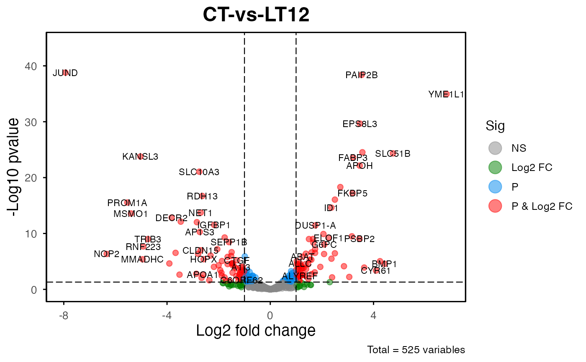
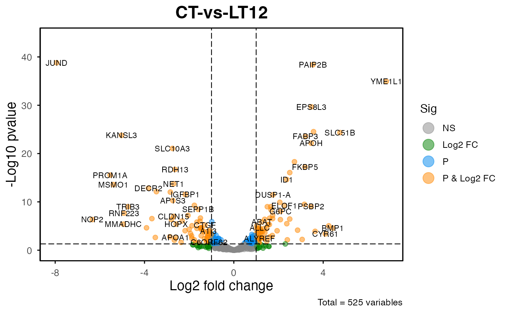
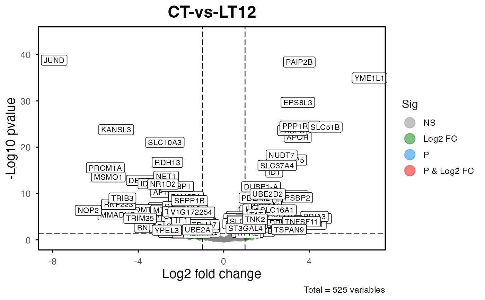

Volcano plot for visualizing differentailly expressed genes.
Source:R/volcano_plot.R
volcano_plot.RdVolcano plot for visualizing differentailly expressed genes.
Usage
volcano_plot(
data,
title = "CT-vs-LT12",
log2fc_cutoff = 1,
pq_value = "pvalue",
pq_cutoff = 0.05,
cutoff_line = "longdash",
point_shape = "large_circle",
point_size = 2,
point_alpha = 0.5,
color_normal = "#888888",
color_log2fc = "#008000",
color_pvalue = "#0088ee",
color_Log2fc_p = "#ff0000",
label_size = 3,
boxed_labels = FALSE,
draw_connectors = FALSE,
legend_pos = "right"
)Arguments
- data
Dataframe: differentially expressed genes (DEGs) stats (1st-col: Genes, 2nd-col: log2FoldChange, 3rd-col: Pvalue, 4th-col: FDR).
- title
Character: title of plot. Default: CT-vs-LT12.
- log2fc_cutoff
Numeric: log2(FoldChange) cutoff log2(2) = 1. Default: 1.0, min: 0.0, max: null.
- pq_value
Character: select pvalue or qvalue. Default: "pvalue", options: "pvalue", "padj".
- pq_cutoff
Numeric: pvalue or qvalue cutoff. Default: 0.005, min: 0.000, max: 1.000.
- cutoff_line
Character: cutoff line type. Default: "longdash", options: "blank", "solid", "dashed", "dotted", "dotdash", "longdash", "twodash".
- point_shape
Character: point shape. Default: "large_circle", options: "border_square", "border_circle", "border_triangle", "plus", "times", "border_diamond", "border_triangle_down", "square_times", "plus_times", "diamond_plus", "circle_plus", "di_triangle", "square_plus", "circle_times","square_triangle", "fill_square", "fill_circle", "fill_triangle", "fill_diamond", "large_circle", "small_circle", "fill_border_circle", "fill_border_square", "fill_border_diamond", "fill_border_triangle".
- point_size
Numeric: point size. Default: 1.0, min: 0.0, max: null.
- point_alpha
Numeric: point color alpha. Default: 0.50, min: 0.00, max: 1.00.
- color_normal
Character: normal genes color (color name or hex value). Default: "#888888".
- color_log2fc
Character: genes color that log2fc >= log2fc_cutoff. Default: "#008000".
- color_pvalue
Character: genes color that pvalue > pq_cutoff. Default: "#0088ee".
- color_Log2fc_p
Character: genes color that log2fc >= log2fc_cutoff and pvalue > pq_cutoff. Default: "#ff0000".
- label_size
Numeric: DEG labels size. Default: 3.0, min: 0.0, max: null.
- boxed_labels
Logical: add box to every DEG label. Default: FALSE.
- draw_connectors
Logical: add connector between DEGs and labels. Default: FALSE.
- legend_pos
Character: legend position. Default: "right", options: "right", "left", "top", "bottom".
Examples
# 1. Library TOmicsVis package
library(TOmicsVis)
# 2. Use example dataset
data(degs_stats)
head(degs_stats)
#> Gene log2FoldChange Pvalue FDR
#> 1 A1I3 -1.13855748 0.000111040 0.000862478
#> 2 A1M 0.59076131 0.070988041 0.192551708
#> 3 A2M 0.09297827 0.819706797 0.913893947
#> 4 A2ML1 -0.26940689 0.745374782 0.874295125
#> 5 ABAT 1.24811621 0.000001440 0.000016800
#> 6 ABCC3 -0.72947545 0.005171574 0.024228298
# 3. Default parameters
volcano_plot(degs_stats)

# 4. Set color_Log2fc_p = "#ff8800"
volcano_plot(degs_stats, color_Log2fc_p = "#ff8800")

# 5. Set boxed_labels = TRUE
volcano_plot(degs_stats, boxed_labels = TRUE)
